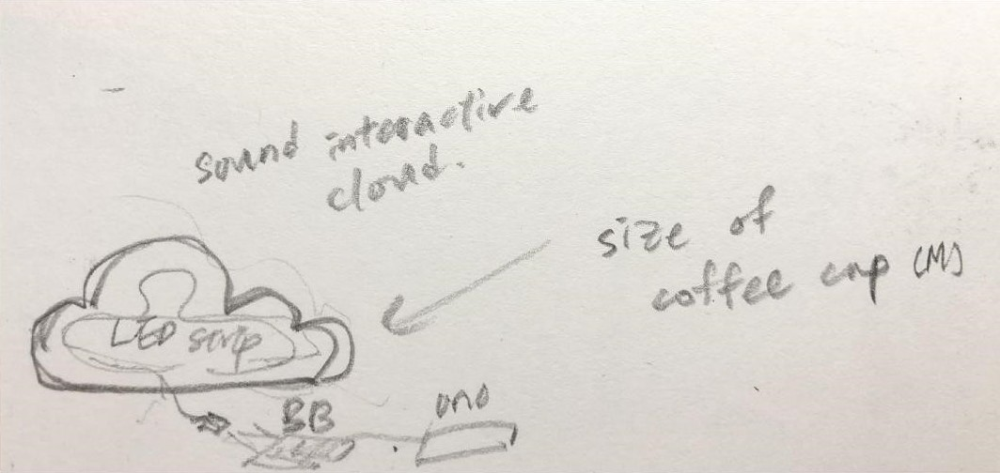

Sound Cloud
Cotton, Iced coffee cup, Arduino, LED strip
2019
In Sound Cloud, the connection between sight and sound is achieved by translating music into visual cues. Audio signals are processed through a Max MSP sketch, which sends the information to an Arduino housed within a fabricated cotton cloud. The Arduino interprets these signals and adjusts the cloud’s colors to match the rhythm and intensity of the music. This creates a synchronized relationship between auditory and visual stimuli, where the cloud's lighting dynamically responds to sound patterns, offering an immersive, multisensory experience.

×